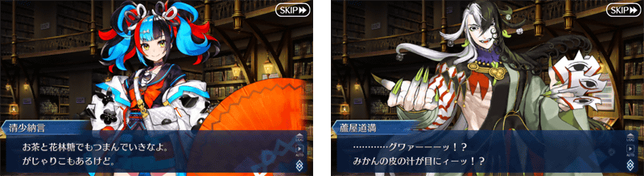
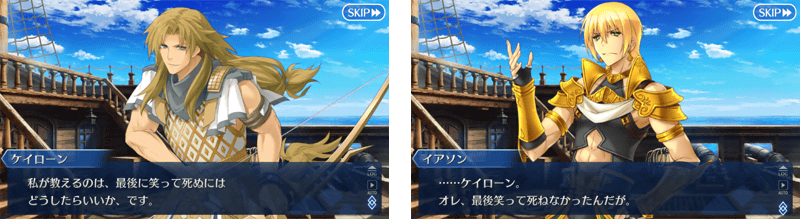
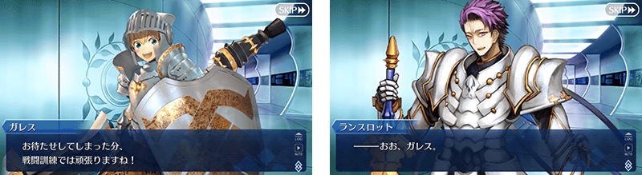
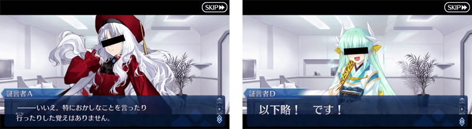
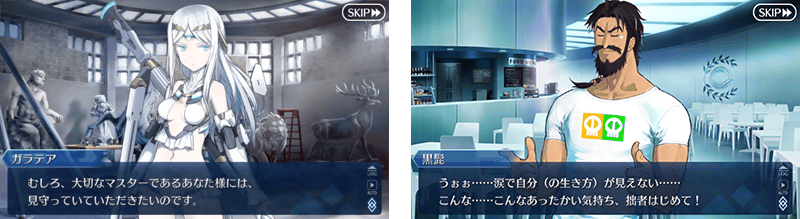
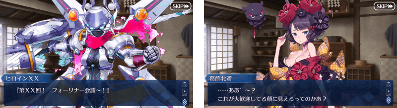
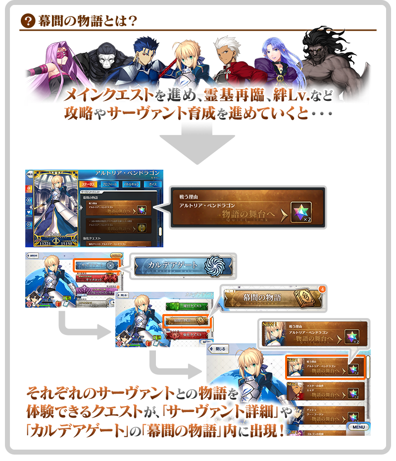

以期間限定舉辦「幕間物語宣傳活動 第18彈」。
宣傳活動舉辦中，除了實施特別連續登入獎勵外，新開放幕間物語的6位從者強化大成功・極大成功率2倍！
並且，所有從者的幕間物語的消耗AP變成1/2！
藉此機會滿足開放條件，通過喜愛從者的物語吧！
※本頁面皆為開發中圖片。會有與實際圖片相異的情況。
◆舉辦期間◆
2021年12月2日(四) 17:00～12月9日(四) 11:59
◆開放時間◆ 2021年12月2日(四) 17:00～
◆對象從者◆ ・清少納言(Archer) ・凱隆 ・加雷斯 ・迦摩(Assassin) ・伽拉忒亞 ・葛飾北齋(Foreigner)
|
◆關卡開放條件◆ ◆關卡通過報酬◆ |

|
◆關卡開放條件◆ ◆關卡通過報酬◆ |

|
◆關卡開放條件◆ ◆關卡通過報酬◆ |

|
◆關卡開放條件◆ ◆關卡通過報酬◆ |

|
◆關卡開放條件◆ ◆關卡通過報酬◆ |
 |

|
◆關卡開放條件◆ ◆關卡通過報酬◆ |



為了記念「幕間物語宣傳活動 第18彈」的舉辦，實施特別連續登入獎勵。
在下述期間中5天內連續登入的話，贈送最多呼符2張、睿智的業火ALL★5(SSR)9張！
◆舉辦期間◆
2021年12月2日(四) 17:00～12月10日(五) 2:59
◆贈送對象◆
2021年12月9日(四) 2:59前通過「特異點F 炎上汙染都市 冬木」的御主對象
※上述時間前，在管理室(ターミナル)畫面的關卡橫幅必須要有「CLEAR」的文字顯示。
| 連續登入天數 | 贈送內容 | |
|---|---|---|
| 第1天 |

|
呼符 1張 |
| 第2天 |

|
睿智的業火ALL★5(SSR) 3張 |
| 第3天 |
|
睿智的業火ALL★5(SSR) 3張 |
| 第4天 |
|
睿智的業火ALL★5(SSR) 3張 |
| 第5天 |
|
呼符 1張 |
※第1次的登入獎勵會在12月2日(四) 17:00以後配發。 ※之後的登入獎勵會在每天3:00配發。 ※連續登入天數中斷後，無法領取之後的禮物。 ※最多能領取5次，但根據成為贈送對象的時間點，可能無法到此上限。
下述的期間中，本次開放新幕間物語的6位從者在進行強化時，大成功(經驗值2倍加成)・極大成功(經驗值3倍加成)的發生率以期間限定變成2倍！
請務必藉此機會強化對象從者吧！
◆舉辦期間◆
2021年12月2日(四) 17:00～12月9日(四) 11:59
◆對象從者◆
| 職階 | 稀有度 | 從者名 | |
|---|---|---|---|

|
Archer | ★★★★★ | 清少納言 |
| ★★★★ | 凱隆 | ||

|
Lancer | ★★ | 加雷斯 |

|
Assassin | ★★★★★ | 迦摩 |

|
Berserker | ★★★★★ | 伽拉忒亞 |

|
Foreigner | ★★★★★ | 葛飾北齋 |
下述的期間中，所有從者的幕間物語的消耗AP變成1/2！ ※就算在戰鬥中撤退的情況，也會是同様的消耗量。 ※「靈基解放關卡」為消耗AP1/2的對象外。
◆舉辦期間◆
2021年12月2日(四) 17:00～12月9日(四) 11:59
◆對象關卡◆
所有的幕間物語
※也包含自2021年12月2日(四) 17:00開放的幕間物語。
其他還有，期間限定「幕間物語宣傳活動第18彈Pick Up召喚(每日交替)」同時舉辦！
關於詳情，請自下述橫幅確認。
■「幕間物語宣傳活動第18彈Pick Up召喚(每日交替)」詳細情報